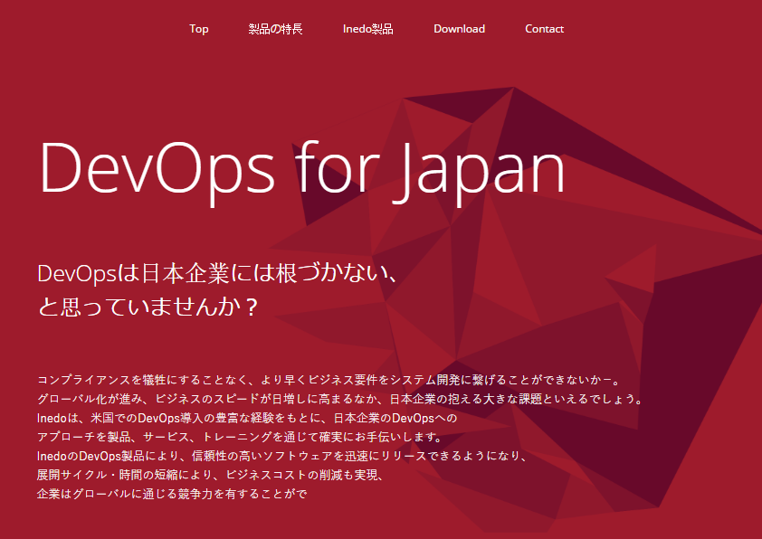

Inedo Japan
When Indeo opened up offices in Japan they needed a special mini-site for a non-English speaking audience. I worked with Inedo's marketing team, and a Japanese based marketing company to make a single page mini-site. Aside from the standard front-end development tasks, we also created a landing page and redirect which was automatically cued when a browser language was set to Japanese.
- LESS
- CSS
- HTML